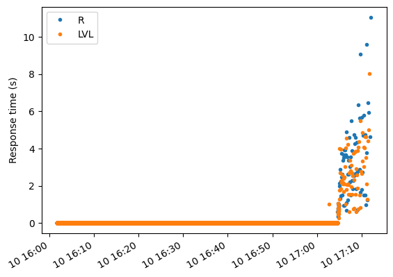

This page was generated from
docs/examples/logging/logfile_parsing.ipynb.
Interactive online version:
 .
.
Logfile parsing
Here, we provide an example concerning how to benefit from QCoDeS logs by simple analysis and visualisation.
[1]:
%matplotlib inline
import os
from zipfile import ZipFile
import matplotlib.pyplot as plt
from qcodes.logger import log_to_dataframe, time_difference
[2]:
# put the 30MB into a zip file
filepath = os.path.join(os.getcwd(), 'static', 'pythonlog.zip')
with ZipFile(filepath) as z:
with z.open('pythonlog.log', 'r') as f:
my_log = [line.decode() for line in f]
[3]:
os.path.exists(filepath)
[3]:
True
[4]:
logdata = log_to_dataframe(my_log, separator=' - ', columns=['time', 'module', 'function', 'loglevel', 'message'])
The logdata is, now, a nice and tidy DataFrame that one can further manipulate to extract more information, if needed.
[5]:
logdata
[5]:
| time | module | function | loglevel | message | |
|---|---|---|---|---|---|
| 0 | 2018-05-10 16:01:50,497 | qcodes.instrument_drivers.QDev.QDac_channels | write | DEBUG | Writing to instrument qdac: wav 2 0 0 0;set 2 ... |
| 1 | 2018-05-10 16:01:50,546 | qcodes.instrument.visa | ask_raw | DEBUG | Querying instrument SR860_120: OUTP? 2\r\n |
| 2 | 2018-05-10 16:01:50,552 | qcodes.instrument.visa | ask_raw | DEBUG | Got response from instrument SR860_120: 8.9832... |
| 3 | 2018-05-10 16:01:50,553 | qcodes.instrument.visa | ask_raw | DEBUG | Querying instrument SR860_120: SLVL?\r\n |
| 4 | 2018-05-10 16:01:50,561 | qcodes.instrument.visa | ask_raw | DEBUG | Got response from instrument SR860_120: 9.9999... |
| ... | ... | ... | ... | ... | ... |
| 255146 | 2018-05-10 17:12:03,208 | qcodes.instrument.visa | ask_raw | DEBUG | Querying instrument SR860_120: OUTP? 2\r\n |
| 255147 | 2018-05-10 17:12:14,257 | qcodes.data.data_set | finalize | DEBUG | Finalising the DataSet. Writing.\r\n |
| 255148 | 2018-05-10 17:12:14,258 | qcodes.data.gnuplot_format | write | DEBUG | Attempting to write the following group: qdac_... |
| 255149 | 2018-05-10 17:12:14,259 | qcodes.data.gnuplot_format | write | DEBUG | Wrote to file from 40200 to 40201\r\n |
| 255150 | 2018-05-10 17:12:14,378 | qdev_wrappers.sweep_functions | _do_measurement | ERROR | Exception in doND\r\n |
255151 rows × 5 columns
[6]:
data = logdata
Get the query time for the SR860
We know that the log file documents an experiment quering an SR860 for R and amplitude over and over. Let us analyse and visualise query response times.
[7]:
qstr_R = r'Querying instrument SR860_120: OUTP\? 2' # remember to escape
queries_R = data[data.message.str.contains(qstr_R)]
responses_R = data.loc[queries_R.index + 1]
qstr_lvl = r'Querying instrument SR860_120: SLVL\?' # remember to escape
queries_lvl = data[data.message.str.contains(qstr_lvl)][:-1]
responses_lvl = data.loc[queries_lvl.index + 1]
Find the elapsed times
[8]:
elapsed_times_R = time_difference(queries_R.time, responses_R.time)
elapsed_times_lvl = time_difference(queries_lvl.time, responses_lvl.time)
Visualise!
[9]:
from pandas.plotting import register_matplotlib_converters
register_matplotlib_converters()
fig, ax = plt.subplots(1,1)
ax.plot(queries_R.time.str.replace(',', '.').astype("datetime64[ns]"), elapsed_times_R, '.', label='R')
ax.plot(queries_lvl.time.str.replace(',', '.').astype("datetime64[ns]"), elapsed_times_lvl, '.', label='LVL')
fig.autofmt_xdate()
ax.set_ylabel('Response time (s)')
plt.legend()
[9]:
<matplotlib.legend.Legend at 0x7f5951a1be10>

[ ]: